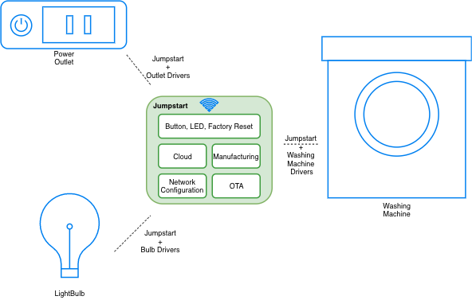

Testing testing¶
testing testing¶
Building production-ready firmware can be hard. It involves multiple questions and decisions about the best ways of doing things. It involves building phone applications, and integrating cloud agents to get all the features done. What if there was a ready reference, a known set of best steps, gathered from previous experience of others, that you could jumpstart with?
ESP-Jumpstart is focused on building products on ESP32. It is a quick-way to get started into your product development process. ESP-Jumpstart builds a fully functional, ready to deploy “Smart Power Outlet” in a sequence of incremental tutorial steps. Each step addresses either a user-workflow or a developer workflow. Each step is an application built with ESP-IDF, ESP32’s software development framework.

The ESP-Jumpstart’s Smart Power Outlet firmware assumes the device has one input push-button, and one GPIO output. It implements the following commonly required functionality.
Allows and end-user to configure their home Wi-Fi network through phone applications (iOS/Android) Switch on or off the GPIO output Use a push-button to physically toggle this output Allow remote control of this output through a cloud Implement over-the-air (OTA) firmware upgrade Perform Reset to Factory settings on long-press of the push-button Once you are familiar with ESP-Jumpstart, building your production firmware, is a matter of replacing the power-outlet’s device driver, with your device driver (bulb, washing machine).
{kind=link}
You will require the following to get started:
An ESP32 development kit: ESP32-DevKit-C https://www.espressif.com/en/products/hardware/esp32-devkitc/overview available through your closest store. You could also use any other ESP32 development board if you already have one. A Development host setup (Windows, Linux or Mac) that will be used for development.
For ESP8266 Users¶
You will require the following to get started:
An ESP8266 development kit: ESP8266-DevKit-C https://www.espressif.com/products/hardware/esp8266ex/overview/ available through your closest store. You could also use any other ESP8266 development board if you already have one. ESP8266_RTOS_SDK is Espressif’s IoT Development Framework for ESP8266 (https://docs.espressif.com/projects/esp8266-rtos-sdk/en/latest). All references to IDF, ESP-IDF are to be mapped to ESP8266_RTOS_SDK in the context of ESP8266. The instructions for ESP32 and ESP8266 are common unless specified under the For ESP8266 Users section.
For the Restless¶
If you are familiar with Espressif’s hardware and/or embedded systems, and are looking for a production-reference without the incremental steps, you can do the following:
Directly use the final application in ESP-Jumpstart If you don’t have a cloud account, configure your AWS IoT Cloud configuration as mentioned in Section AWS IoT Create the manufacturing configuration file for your device’s unique cloud credentials, based on the instructions provided in Section Generating the Factory Data and flash it at the appropriate location Build, flash and boot up the firmware image as you usually do Use the reference phone-app (iOS/Android) libraries for building your phone applications. Or use the reference application to try things out as discussed in Section Unified Provisioning Use the commands discussed in Section AWS IoT for remote control Now that you have this functional, modify to work with your driver